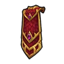

Brasão do Lorde Dragão
Manto · Tier 9 · Nível 27
Concede grande autoridade sobre todos os dragões, mas cuidado com aqueles que não a merecem!
Atributos
Defesa
270
Economia
Valor
390.000
Tempo de fabricação
4h 50min
XP do comerciante
62.500
Trabalhadores: Invocador 22, Alfaiate 18
Receita


Marcos do projeto
7
-54 Couro
18
Valor +25%
32
Desbloqueia projeto: Manto de Arcebispo
50
Qualidade exigida do componente 1 -1
80
Chance de qualidade +1